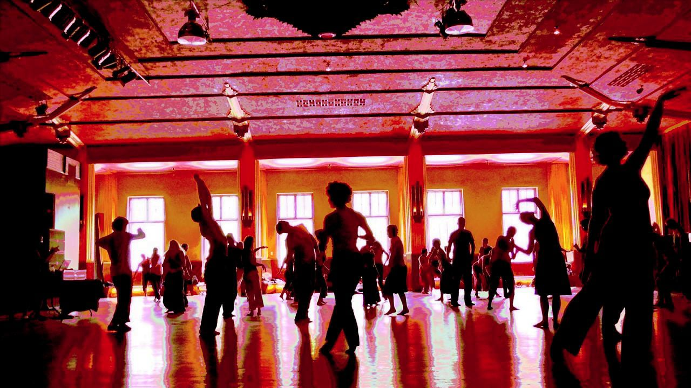

The More You Know
During the dancing, a state of deep-body consciousness or
“embodiment” displaces thinking.
Ecstatic dance effortlessly induces a true meditation state.
Although ecstatic dance is an ancient practice, it has only
recently become extremely popular.
Dance groups are often called “Conscious Dance” or “Dance Temple,”
and one group even calls itself “Ecstatic Dance”—the trademarked name.
In this article, I am using “ecstatic dance” in
the anthropological sense.
